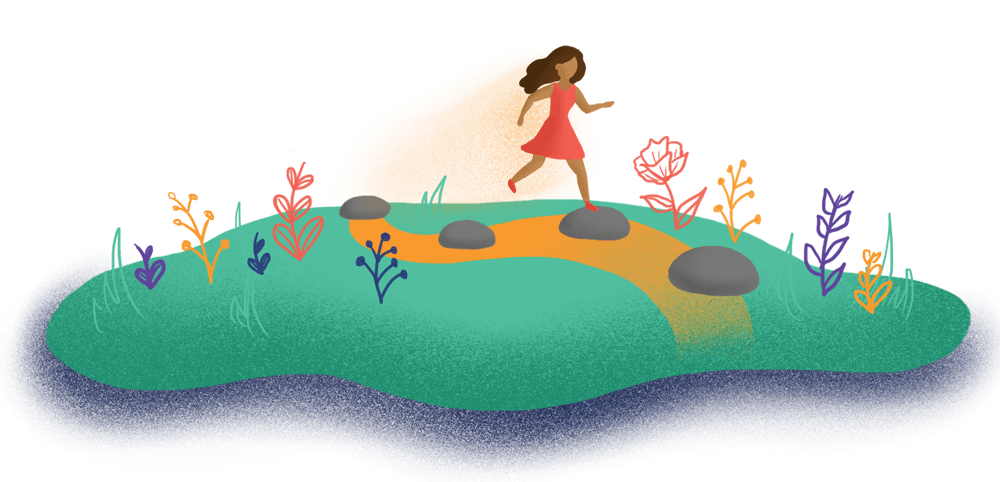

09
It's time to make change happen in your community! In this stepping stone, you will create a strategic plan and continue to work with key stakeholders and decision-makers to turn your research results into action.

download
34 page PDF | 15.2 MB

Time Commitment: 3-5 sessions
1.

Do this:
Goals for Change (reaffirming what you want to take action on and why)
2.
Do this:
Ways We Take Action (evaluating possible options for making change)
Refer to this for ideas and guidance:
Action Guide (becoming familiar with various action approaches)
3.
Plan with these:
Power Mapping (analyzing who can help you make change)
Action Planning, Making Strategy (identifying clear goals, strategies and timelines to share your findings and make your recommendations a reality)
Crafting an Elevator Pitch (developing a short speech to introduce and spark interest in your project)
Power Interview (building key relationships to move your recommendations forward)
Practice with this:
Advocacy Role Play (requesting commitments of support from decision-makers and stakeholders)
download